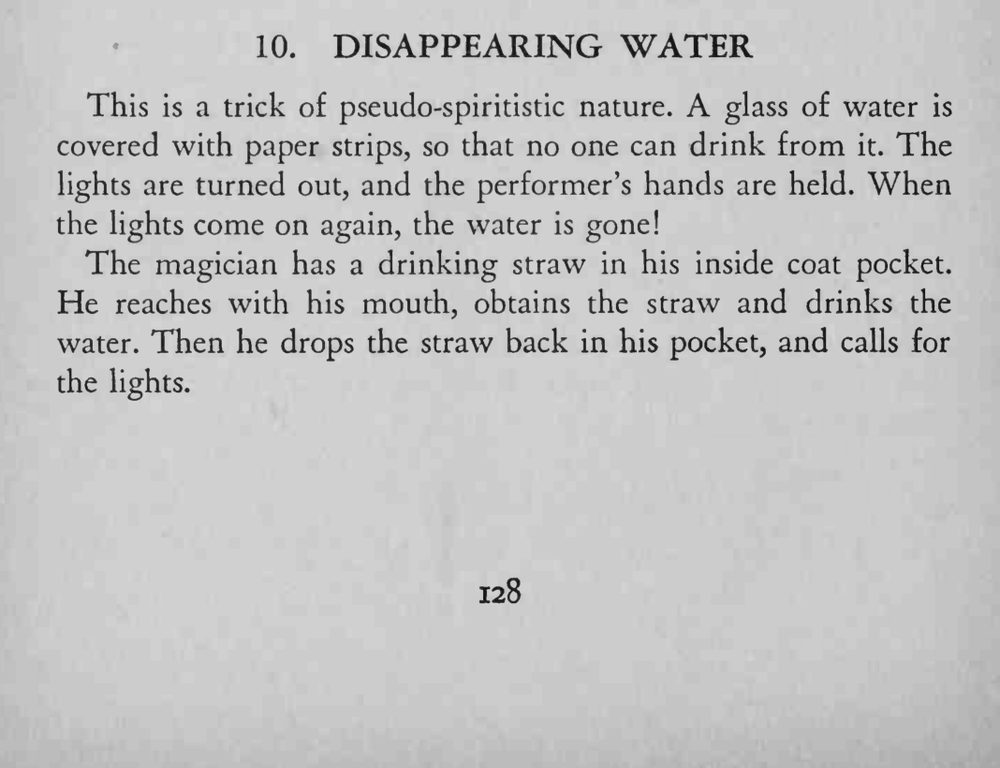

一杯水用纸条封住，灯关掉、魔术师的双手被人握住；灯再亮时，杯里的水已经不见了。
吸管的动作要在黑暗里完成，双手被握住时只靠嘴。

This is a trick of pseudo-spiritistic nature. glass of water is covered with paper strips, so that no one can drink from it. The lights are turned out, and the performer's hands are held. When the lights come on again, the water is gone! The magician has a drinking straw in his inside coat pocket. He reaches with his mouth, obtains the straw and drinks the water. Then he drops the straw back in his pocket, and calls for the lights.